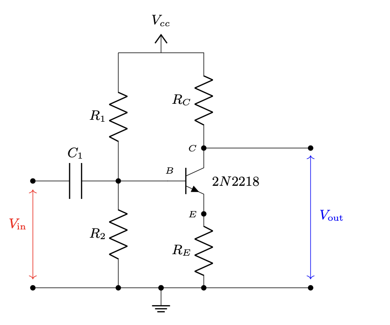
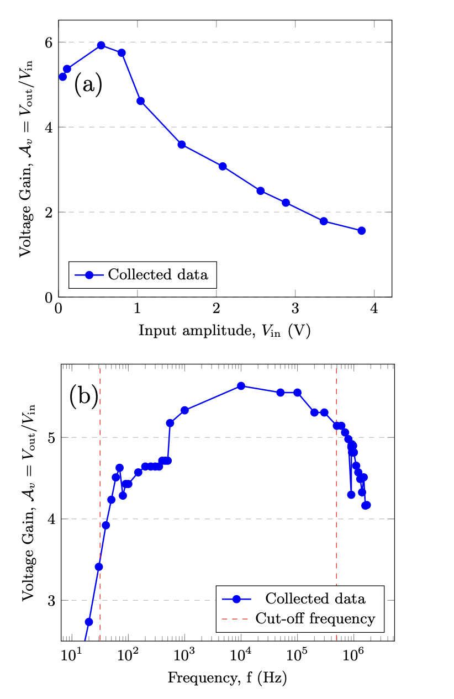
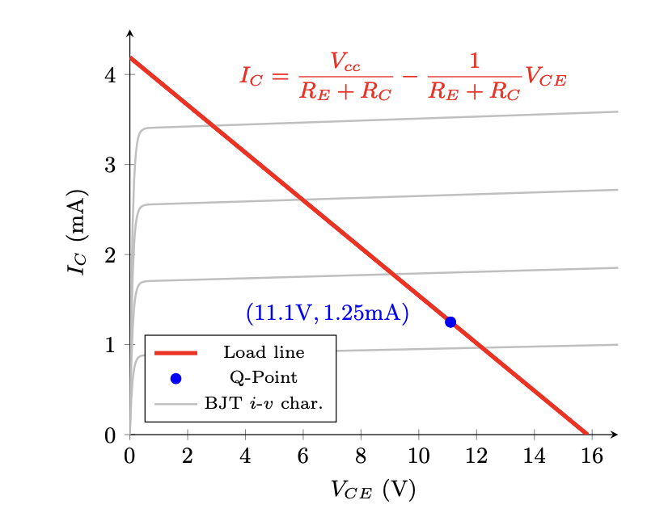
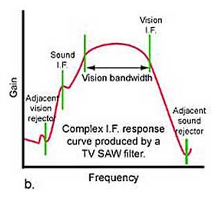

Bandwidth of the Common-Emitter Amplifier
Affiliation: Physics Department, Lawrence University.
Originally prepared for PHYS220 / Electronics Lab.
Abstract
We build a common-emitter amplifier circuit with the bipolar junction transistor and investigate the frequency response of our amplifier by varying the input frequency over a large range (1.7 MHz). We observe the circuit both when it acts as a high-pass \(RC\)-filter and as a low-pass \(RC\)-filter, and the range in between the two cut-off frequencies is the bandwidth of our amplifier. We find that the voltage gain of our circuit is at maximum at 5.93 in the middle of the bandwidth. Our bandwidth is not flat like expected and is over a wide range of frequencies (40 Hz to 1700 kHz), and the lower cut-off frequency is as predicted but higher cut-off frequency is three times higher than the expected value.
Modern audio amplifiers have a flat frequency response curve over the whole range from 20 Hz to 20 kHz while radio amplifiers have a narrow and peaked frequency response that is above 100 kHz [1,2]. Amplifiers are designed to amplify a specific range of frequencies but it is also important to minimize the noise and distortion in the signals they produce. Thus, bandwidth, the range of frequencies in which the amplifier provides useful amplification, is an essential character of an amplifier: a bandwidth that is too wide can result in noise signals, and one that is too narrow can fail to pick up needed signals [1,3].
Common Emitter Amplifier (CEA) circuit uses the bipolar junction transistor (BJT) to amplify an AC input signal. We observe the voltage gain of the circuit, and investigate the frequency response of the gain [4]. In general, the BJT transistor consists of three terminals: Base, Collector, Emitter. The current \(I_B\) flowing into the Base terminal is relatively small compared to the current \(I_C\) flowing into the collector, and the ratio of the latter over the former is the current gain of the transistor [5].
To perform the experiment, we build the circuit shown in Fig. 1 [4]. The characteristics of a CEA circuit include a voltage divider across the supplied input signal that is connected to the Base of the transistor, quiescent operating point around which the output signal stays sinusoidal, input-signal-voltage-dependent voltage gain, and frequency-dependent signal filtering.

The purpose of the voltage divider formed by resistors \(R_1\) and \(R_2\) is to keep the voltage at the Base constant and steady from the varying current gain \(\beta\) [6]. This process, known as proper biasing, allows the circuit to operate within the region where the output signal is sinusoidal.
The voltage gain \(\mathcal{A}_v\) of the circuit is
\[\mathcal{A}_v = \dfrac{V_\text{out}}{V_\text{in}} = \dfrac{-R_C}{R_E+r_e} \label{eq:gain2}\]
where
\[r_e= \frac{V_T}{I_{C,q}}=\frac{26\text{ mV}}{I_{C,q}}\]
The gain varies with the input frequency, and there are two cut-off frequencies at which the circuit filters out low and high frequencies that are outside the bandwidth.
The part of the circuit with the input coupling capacitor \(C_1\) and the voltage divider formed by \(R_1\) and \(R_2\) constitutes a high-pass \(RC\)-filter. It filters out input signals that are below the first cutoff frequency. We can calculate this cutoff frequency
\[f_{c,lo} = \dfrac{1}{2\pi R_\text{eff} C_1} \label{eq:freqlo}\]
where the effective resistance comes from Ohm’s law with \(R_1\) and \(R_2\) in parallel
\[R_\text{eff}=\frac{R_1 R_2}{R_1+R_2}\]
When we reach high frequencies, the gain starts rolling off, and the load attached to the amplifier acts as a low-pass \(RC\) filter. This load comes from the capacitance of the attenuating probe connected to the oscilloscope. The second cutoff frequency is
\[f_{c,hi} = \dfrac{1}{2\pi R_C C_\text{load}}. \label{eq:freqhi}\]
| Circuit Element | Nominal Value | Measured Value |
|---|---|---|
| \(R_1\) | \(56\text{ k}\Omega\pm 5\%\) | Measured Key Value |
| \(R_2\) | \(5.6\text{ k}\Omega\pm 5\%\) | Measured Key Value |
| \(R_C\) | \(3.3\text{ k}\Omega\pm 5\%\) | Measured Key Value |
| \(R_E\) | \(560\ \Omega\pm 5\%\) | Measured Key Value |
| \(C_1\) | \(1\ \mu\text{F}\) | – |
| \(C_2\) | \(10\ \mu\text{F}\) | – |
| \(C_\text{load}\) | \(0.1\text{ nF}\) | – |
We explore the voltage gain at a fixed frequency of 20 kHz over a range of input amplitudes \(V_\text{in}\) between 50 mV and 4 V, Fig. 2(a). We reach a voltage at which the output signal starts to lose its sinusoidal shape in its positive-going phases. We record this voltage to be 860 mV, and the more we increase the input signal, the flatter the output’s positive peaks become. This effect is called amplitude distortion due to incorrect biasing [7]. Increasing the input amplitude pushes the quiescent point of the circuit to the right of the load line in Fig. 3, thus explains why we see clipping in only the positive peaks of the output. We would see clipping in the negative phase if this happens in the other direction when the bias voltage is low.
This also explains what is happening in Fig. 2(a): increasing the input voltage initially increases the voltage gain, but as the peak of the output signal stops rising and starts plateauing, the gain decreases. Thus, when examining the effect of input frequency on the amplifier, we fix the input amplitude at 0.5 V where the gain is at maximum in Fig. 2(a).


| Voltage | Impedance | |||
|---|---|---|---|---|
| \(V_{cc}\) | Target Volt | \(Z_\text{out}\) | Target Imp | |
| \(V_{C,q}\) | Target Volt | \(Z_\text{in}\) | Target Imp | |
| \(V_{B,q}\) | Target Volt | |||
| \(V_{E,q}\) | Target Volt |
We then observe the frequency-dependent amplification of the circuit by varying the frequency over a large range from 10 Hz to 1 MHz. Fig. 2(b) shows the relationship between the voltage gain versus the input frequency and two calculated cut-off frequencies when the circuit acts as a high-pass \(RC\)-filter versus a low-pass one (Equations 2 and 4).
Using Equation 1, we calculate the voltage gain of our circuit to be \(-5.65\) where the negative sign implies that the input and output signals are 180° out of phase. This agrees with what we see on the oscilloscope with the troughs of the output aligned with the peaks of the input. This also indicates that the amplifier is using negative feedback, which has several purposes including reducing signal distortion and background noise produced by the amplifier, or increasing the bandwidth of the amplifier [1].
| Measured | Calculated | |
|---|---|---|
| Voltage gain | \(5.93\text{V}\) | \(5.65\text{V}\) |
| Lower Cutoff Frequency | 40 Hz | 31.83 Hz |
| Higher Cutoff Frequency | 1700 kHz | 500 kHz |
Our measurements of the voltage gain have uncertainties that are mostly less than 0.13, with only two of them with uncertainties of 0.22 [8]. As shown in Table 3, the calculated value agrees with the peak at a voltage gain of 5.93 in Fig. 2(b) with a 0.3% uncertainty. However, the bandwidth we observe is not flat. The theoretical cut-off frequencies are 0.707 times the maximum midband gain. Our measurement of the high-pass \(RC\)-filter’s cut-off frequency agrees with the predicted one, 31.83 Hz from Equation 2, with 26% uncertainty, but the predicted frequency calculated by Equation 4 for the low-pass \(RC\)-filter is way below the experimental one, with 500 kHz compared to 1700 kHz (Table 3).

Summarizing, we do not observe a flat midband gain from our common-emitter amplifier circuit, but we see the expected frequency response of the amplifier. The voltage gain stays high within a range of frequencies; it decreases significantly as the input frequency becomes too small which is when the input coupling capacitor \(C_1\) and the voltage divider act as a high-pass \(RC\)-filter, or too high when the load (attenuating probe connecting to the scope) attached to the amplifier acts as a low-pass \(RC\)-filter. The calculated bandwidth of this amplifier using Equations 2 and 4 also shows that this amplifier amplifies over a wide range of frequencies, from 31.83 Hz to 500 kHz. This could be the effect of the negative feedback. Although our frequency response curve looks like the one from a TV SAW filter in Fig. 4, our range does not match since a TV operates with a 6 MHz bandwidth [9]. We wonder if the variation in voltage gain within the midband gain is due to the uncertainties in our measuring devices.
Regardless, we verify that voltage gain of an amplifier depends on the frequency of the input signal, and depending on the purposes of a device the bandwidth of its amplifier can be narrow and peaked or wide and flat. While the former is important for radio frequency amplifiers which operate with a narrow bandwidth of only 10 kHz, the latter is useful for audio frequency amplifier [1].
Acknowledgments
I wish to acknowledge the support of the Lawrence University Physics Department, Professor Koker, and the Electronics Lab. I also wish to thank my partner, Sarah Dobrzynski, for carrying out the project with me.
I hereby reaffirm the Lawrence University Honor Code.